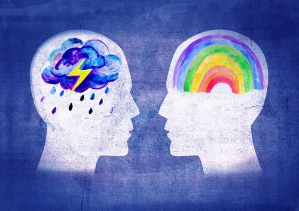
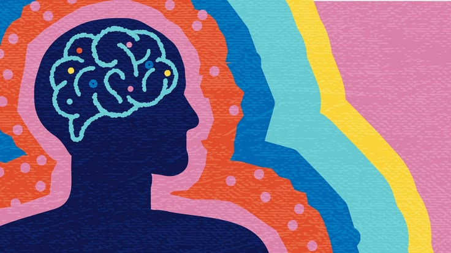

Las emociones se sienten, pero las conductas se eligen
Desarrollar habilidades de regulación emocional ofrece múltiples beneficios
Disminuye los niveles de ansiedad y estrés, mejora la calidad del sueño, favorece la toma de decisiones racionales, previene conflictos interpersonales, aumenta la productividad y el enfoque.

¿Cómo influye el manejo de emociones en tu desarrollo humano?
Saber cómo manejar tus emociones no solo te convierte en una persona más resiliente y serena, también impacta en tu crecimiento personal, en tus relaciones interpersonales y en tu rendimiento profesional.
Desarrollo de la empatía
Comprender y regular tus propias emociones es el primer paso para descifrar y respetar las emociones de los demás.
Mayor claridad mental
Al aprender a identificar qué sientes (y por qué), dejas de actuar por impulso. Esto te permite descubrir tus verdaderos valores, límites y deseos, en lugar de reaccionar bajo el efecto del enojo o el miedo.
Superación del fracaso
El desarrollo humano avanza a base de prueba y error. El manejo emocional te permite tolerar la frustración, ver los errores como aprendizaje y persistir en tus metas a largo plazo.
Autoestima sólida
Regular tus emociones te da una sensación de logro y control personal. Saber que puedes manejar una situación difícil sin desmoronarte refuerza la confianza en tus propias capacidades.
